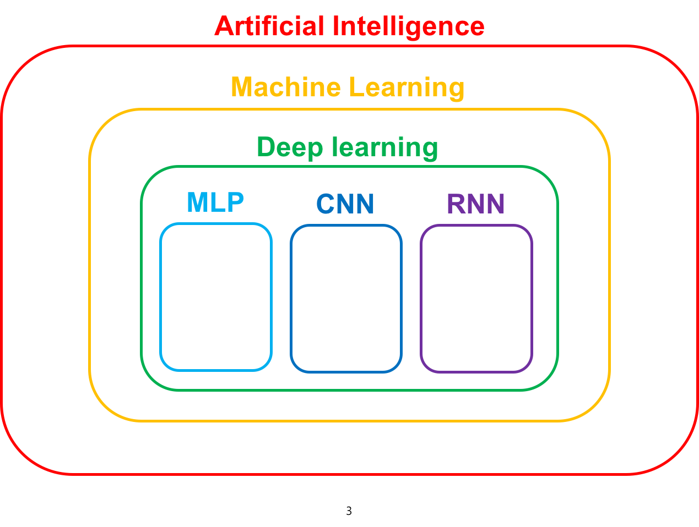
Is it brand new?
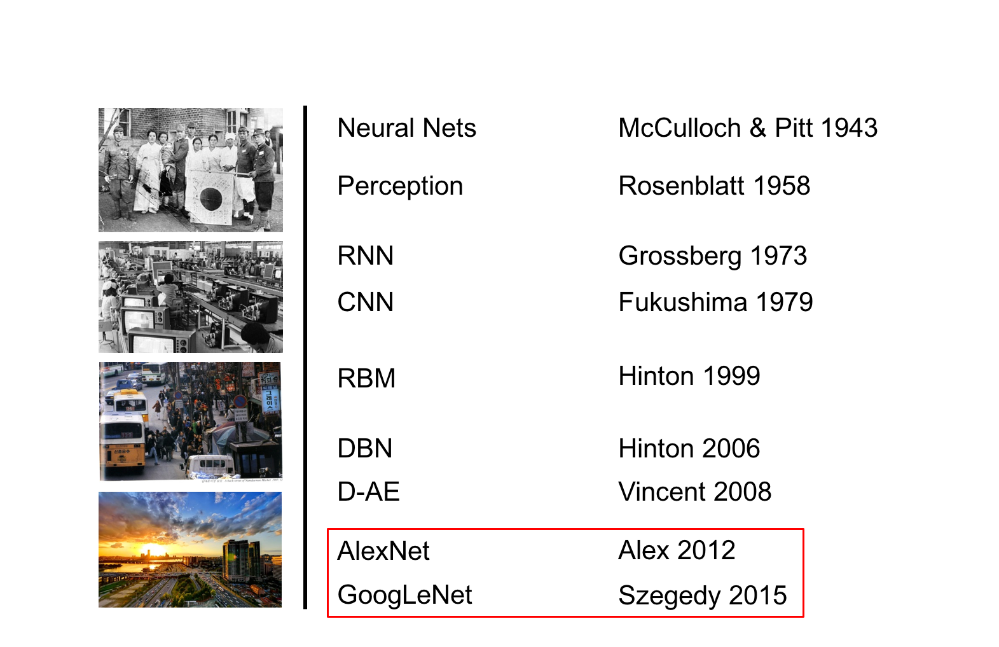
Inspired by nature?
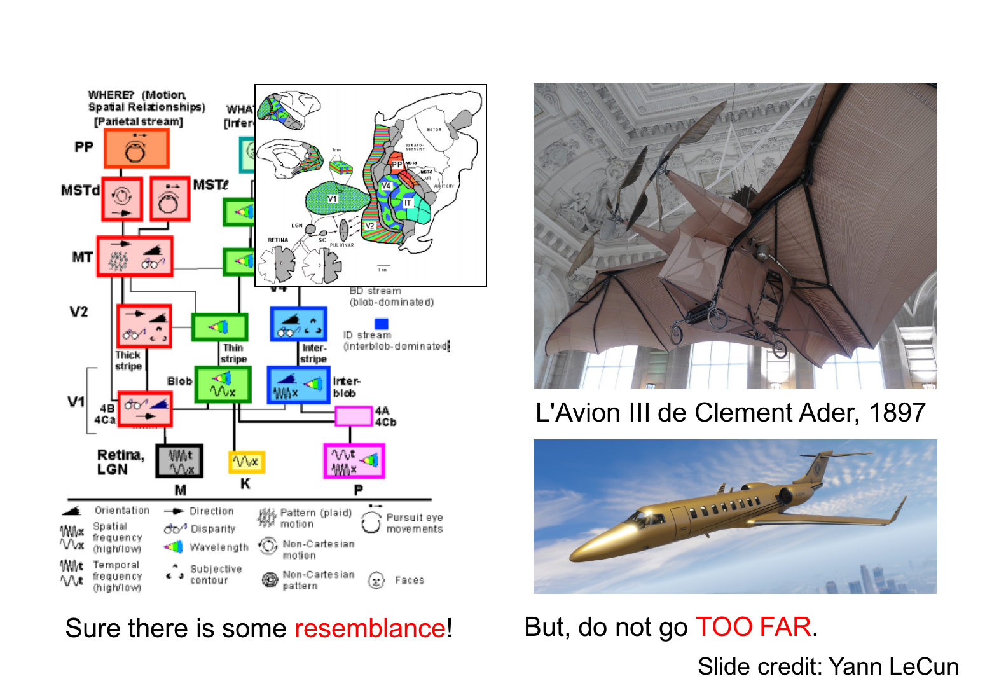
Tools
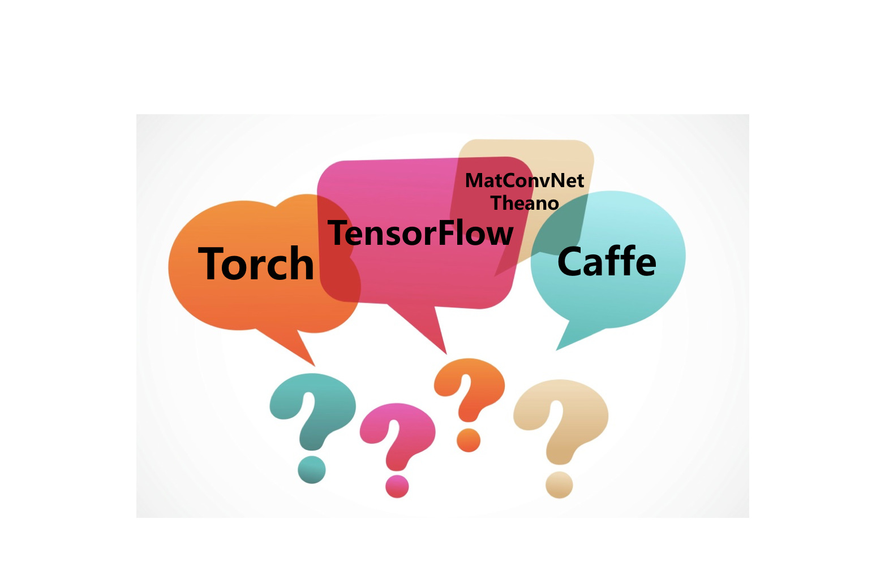
White to black
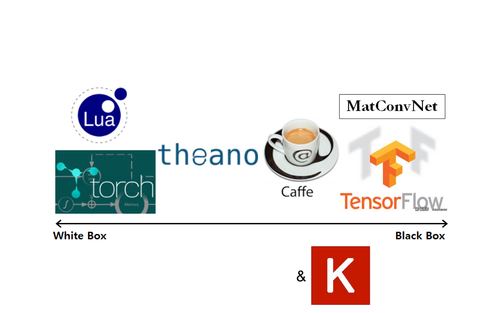
Terminology
Inputdata
Output / Class / Label
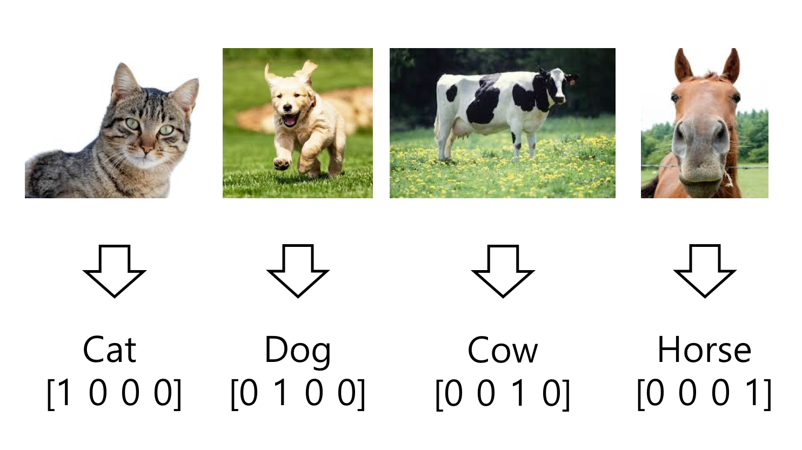
Activation Function
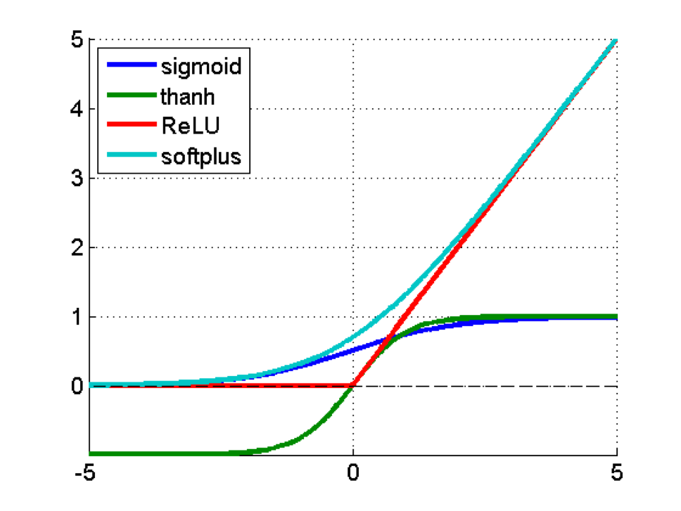
MNIST
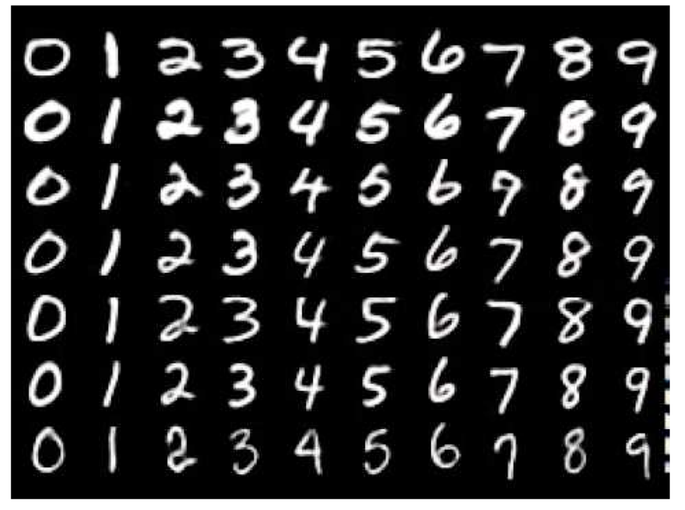
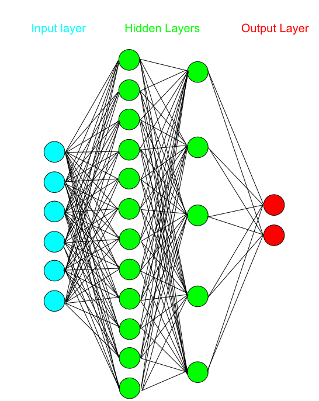
Basic single layer network
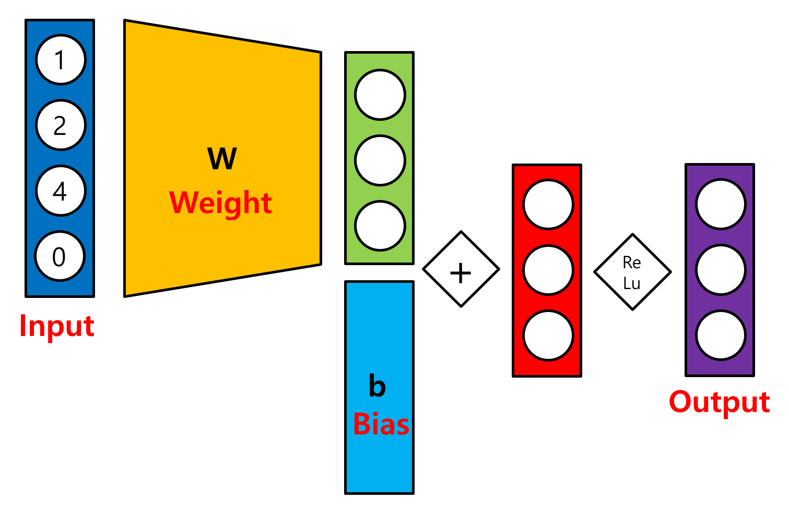
With matrix
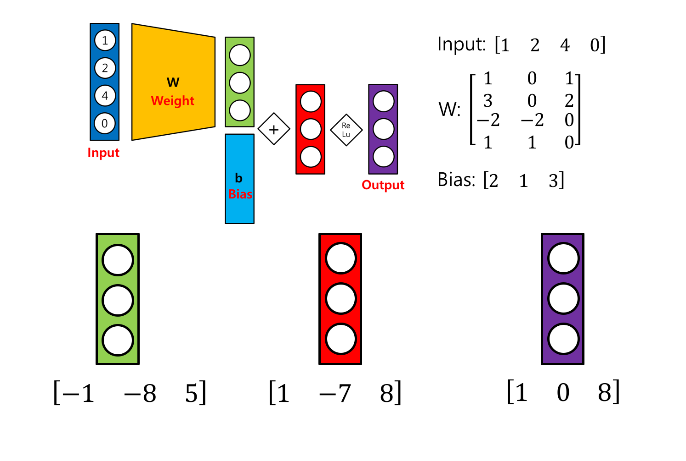
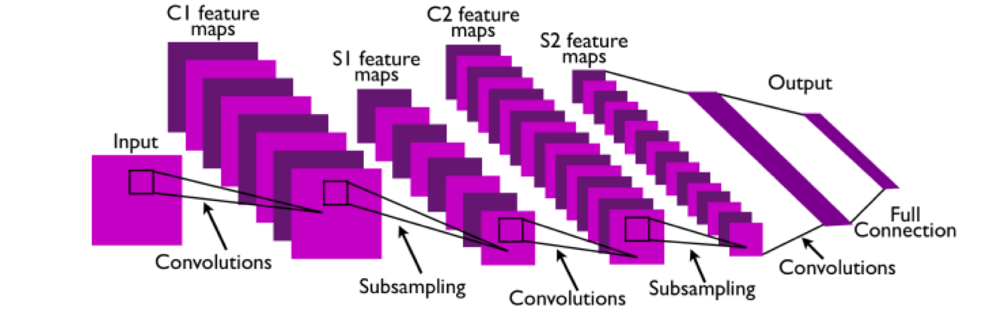 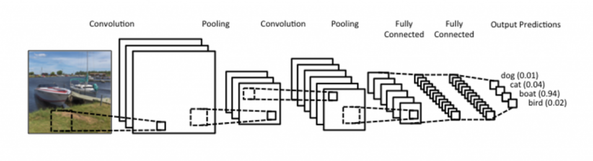
Convolution
Zero-padding
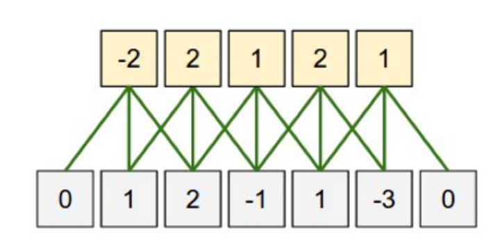
Stride
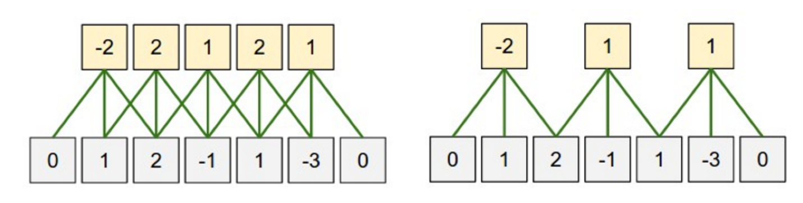
real world
AlexNet
googlenet